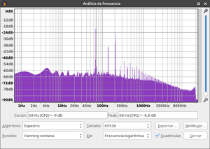
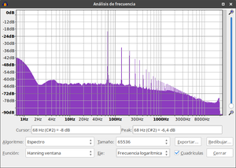

Sonido Pitagórico
Pitágoras en la historia
Pitágoras de Samos parece que fue un chamán o sabio de la Grecia arcaica que vivió en el siglo VI aC.
No tenemos escritos suyos ni de sus coetáneos, sino biografías de historiadores de varios siglos posteriores a su tiempo de vida. Son biografías que están a medio camino entre la leyenda y la descripción histórica. Un buen compendio de estas biografías puede encontrarse en el libro Vidas de Pitágoras, David Hernández de la Fuente, Ed Atalanta.
Hay descripciones de la Grecia arcaica del siglo VI aC en la que se nos acerca a un mundo común a muchas culturas de la época (celtas, íberos, ítalos, tracios, escitas, etc…) o a culturas indígenas que han persistido más en el tiempo en diversos lugares del planeta. La civilización clásica griega estaba todavía fraguándose, y Pitágoras parece haber sido un puente (del mito al logos) entre estas culturas chamánicas y la cultura griega que se desarrollaría posteriormente (Sócrates, Platón, Aristóteles, etc…)
Según las diferentes fuentes biográficas, Pitágoras se formó en Samos, Mileto, Delfos, Egipto, Arabia, Fenicia, Babilonia e incluso la India, con maestros tan destacados como Anaximandro, Tales, los esenios del monte Carmelo, los sacerdotes geómetras de Tebas, los maestros caldeos, etc… Una formación tan excepcional que hace sospechar del rigor de sus biografías: un personaje que estuvo en todos los centros de saber de su época parece más cercano al mito que a una realidad histórica. Pero sabemos, por ejemplo, que el teorema matemático que nos ha llegado atribuído a Pitágoras era conocido ya por los antiguos egipcios. Su paso por Egipto y el contacto con los sacerdotes del dios Tot perece probado.
Su vida parece mejor descrita a partir de que funda una escuela filosófica y religiosa en Crotona, en el sur de la actual Italia, una comunidad que llegó a tener más de 300 miembros. En la hermandad pitagórica desarrollaron la filosofía, la geometría, la astronomía, las matemáticas, la música,… eran vegetarianos, no tenían posesiones personales y guardaban estrictas normas de conducta y obligado secreto en sus conocimientos. También llegaron a tener una gran influencia política en la época.
A los pitagóricos se les atribuye una religión basada en la recreación del universo a través del número, la idea de la inmortalidad del alma de todos los seres vivos, de la metempsicosis o reencarnación, la curación mediante el sonido y la música, el origen de las palabras filosofía o matemáticas, la afinación musical que perduró hasta el siglo XVIII, el descubrimiento de los sólidos regulares, el número pi, la proporción áurea, etc, etc…
La herencia pitagórica es reconocida por Platón y Aristóteles, y otros muchos pensadores, matemáticos y músicos posteriores. Aunque el Pitágoras histórico es de dudoso rigor, la influencia del saber atribuido a esta figura carismática ha perdurado hasta nuestros días.
La música de las esferas
Los pitagóricos daban un sentido de orden (kosmos) al universo, y creían que la salud es un estado al que, en caso de enfermedad, se puede regresar exponiendo al paciente a ese cosmos ordenado, tratando de representarlo a través de la música. En este sentido, la música de las esferas también sería el estado de equilibrio y salud perfectos, que en música vendría representado por nuestra percepción del silencio absoluto.
En 1978, el matemático suizo Hans Cousto propuso octavar diversos ciclos del movimiento de planetas del sistema solar hasta alcanzar frecuencias audibles. Esas frecuencias estarían en consonancia y resonancia con los ciclos naturales, y por tanto podrían ser de utilidad para reestablecer estados de salud y equilibrio. Sin duda, una teoría que fascinaría a los pitagóricos.
Tabla 1: Cálculo de los tempos (bpm) y frecuencias audibles (Hertz) como resultado de octavar el el día solar medio, el mes lunar sinódico y el año solar trópico. Las frecuencias del espectro audible están en rojo.
| Día solar | Mes sinódico | Año trópico | ||
| Período | 24 horas | 29,53 días | 365,24219 días | |
| T (segs) | 86400 | 2551392 | 31556925,25073 | |
| Octavas | bpm | |||
| 14 | 0,19 | |||
| 15 | 0,38 | 22,76 | ||
| 16 | 0,76 | 45,51 | ||
| 17 | 1,52 | 91,02 | ||
| 18 | 3,03 | 182,04 | ||
| 19 | 6,07 | 0,21 | ||
| 20 | 12,14 | 0,41 | 24,66 | |
| 21 | 24,27 | 0,82 | 49,32 | |
| 22 | 48,55 | 1,64 | 98,64 | |
| 23 | 97,09 | 3,29 | 0,27 | 197,27 |
| 24 | 194,18 | 6,58 | 0,53 | 31,90 |
| 25 | 388,36 | 13,15 | 1,06 | 63,80 |
| 26 | 776,72 | 26,30 | 2,13 | 127,60 |
| 27 | 1.553,45 | 52,61 | 4,25 | |
| 28 | 3.106,89 | 105,21 | 8,51 | |
| 29 | 6.213,78 | 210,42 | 17,01 | |
| 30 | 12.427,57 | 420,85 | 34,03 | |
| 31 | 24.855,13 | 841,69 | 68,05 | |
| 32 | 1.683,38 | 136,10 | ||
| 33 | 3.366,76 | 272,20 | ||
| 34 | 6.733,53 | 544,41 | ||
| 35 | 13.467,06 | 1.088,82 | ||
| 36 | 26.934,11 | 2.177,64 | ||
| 37 | 4.355,27 | |||
| 38 | 8.710,54 | |||
| 39 | 17.421,08 |
La afinación absoluta actual en la mayor parte de la música occidental viene definida por el convenio de La = 440Hz. Las frecuencias de los ciclos del sol y la luna anteriores parece que no generan una afinacion que se corresponda con estos 440Hz en su fundamental ni en las diferentes alturas de la escala de 12 semitonos.
Dentro de la total heterogeneidad de la historia de las afinaciones absolutas en música, se encuentran similitudes respecto a las frecuencias anteriormente expuestas en las notas base de la música clásica de India, donde el pedal grave generado por la tampura que siempre acompaña este tipo de música se afinaba tradicionalmente en lo que la afinación occidental consideraría un C# bajo, que se correspondería con la octava 32ª del año solar trópico, 136,10Hz.
Afinaciones
Hay hallazgos arqueológicos de flautas de hueso de los inicios del Paleolítico Superior, de entre 35.000 y 40.000 años de antiguedad. Muy probablemente los humanos en aquel entonces ya habían experimentado con los armónicos naturales de un tubo de aire. A modo de ejemplo, se podrían obtener todos los tonos de una escala mayor con una flauta de dos agujeros, jugando con los armónicos:
- Dos agujeros tapados: Do -> Sol -> Mi
- Un agujero tapado: Fa -> Do -> La
- Dos agujeros al aire: Sol -> Re -> Si
Tabla 1: Afinación por armónicos naturales, con tres octavas. La nota de referencia sería un Do de 136,1 Hz.
| Nota | Factor | Frecuencias (Hz) | ||
| Do C | f | 68,050 | 136,100 | 272,200 |
| Re D | f x 9/8 | 76,556 | 153,113 | 306,225 |
| Mi E | f x 5/4 | 85,063 | 170,125 | 340,250 |
| Fa F | f x 4/3 | 90,733 | 181,467 | 362,933 |
| Sol G | f x 3/2 | 102,075 | 204,150 | 408,300 |
| La A | f x 5/3 | 113,417 | 226,833 | 453,667 |
| Si B | f x 15/8 | 127,594 | 255,188 | 510,375 |
| Do C | f x 2 | 136,100 | 272,200 | 544,400 |
A los pitagóricos se les atribuye otro sistema de afinación que se usó hasta el siglo XVIII, que permitía la música en varios modos o escalas, en un contexto sin movimiento armónico (con cierto parecido a la música clásica de India tocada actualmente)
La música antigua hasta el siglo XVI ó XVII no usaba la escala cromática como la conocemos. Los temas o canciones musicales estaban fijas en un tono y escala, sin movimiento armónico. Así, la elección de escala podía corresponderse con lo que actualmente conocemos como modos (esta es la nomenclatura medieval usada actualmente, pero la griega antigua era diferente):
- Lidio: C D E F# G A B
- Jónico : C D E F G A B
- Mixolidio: C D E F G A Bb
- Dórico: C D Eb F G A Bb
- Aeólico: C D Eb F G Ab Bb
- Frigio: C Db Eb F G Ab Bb
- Locrio: C Db Eb F Gb Ab Bb
Para confeccionar esta afinación, a partir de la fundamental extraían los intérvalos 5ª y 4ª (factor 3/2 y 4/3) y, a partir de éstos, el resto de tonos por ciclo de 5as:
- subiendo: G->D->A->E->B->F#
- bajando: F->Bb->Eb->Ab->Db->Gb
Una propiedad de esta afinación es que la distancia en todos los intérvalos de 1 tono está fijada en 9/8 y en los semitonos en 256/243, en cualquiera de los 7 modos. Respecto a la diferencia entre F# y Gb, el F# sólo se usaba en el modo lidio y el Gb sólo se usaba en el modo locrio.
Tabla 2: Afinación pitagórica, con tres octavas. La nota de referencia sería un Do de 136,1 Hz.
| Nota | Factor | Frecuencias (Hz) | ||
| C | f | 68,050 | 136,100 | 272,200 |
| Db | f x 256/243 | 71,691 | 143,381 | 286,762 |
| D | f x 9/8 | 76,556 | 153,113 | 306,225 |
| Eb | f x 32/27 | 80,652 | 161,304 | 322,607 |
| E | f x 81/64 | 86,126 | 172,252 | 344,503 |
| F | f x 4/3 | 90,733 | 181,467 | 362,933 |
| Gb | f X 1024/729 | 95,587 | 191,175 | 382,350 |
| F# | f x 729/512 | 96,892 | 193,783 | 387,566 |
| G | f x 3/2 | 102,075 | 204,150 | 408,300 |
| Ab | f x 128/81 | 107,536 | 215,072 | 430,143 |
| A | f x 27/16 | 114,834 | 229,669 | 459,338 |
| Bb | f x 16/9 | 120,978 | 241,956 | 483,911 |
| B | f x 243/128 | 129,189 | 258,377 | 516,755 |
| C | f x 2 | 136,100 | 272,200 | 544,400 |
En siglo XVIII, Bach compone El clave bien temperado para demostrar que con la afinación temperada se puede componer pasando por todas las tonalidades. La afinación de temperamento igual es la que se usa en la mayor parte de la música occidental actual y permite la transposición de melodías y armonías, resultando en una sonoridad semejante a costa de alejarse un poco de los intervalos justos.
Tabla 3: Afinación de temperamento igual, con tres octavas. La nota de referencia sería un La de 432,0 Hz.
| Nota | Factor | Frecuencias (Hz) | ||
| C | f | 128,434 | 256,869 | 513,737 |
| C#/Db | f x 2^(1/12) | 136,071 | 272,143 | 544,286 |
| D | f x (2^(1/12))^2 | 144,163 | 288,325 | 576,651 |
| D#/Eb | f x (2^(1/12))^3 | 152,735 | 305,470 | 610,940 |
| E | f x (2^(1/12))^4 | 161,817 | 323,634 | 647,269 |
| F | f x (2^(1/12))^5 | 171,439 | 342,879 | 685,757 |
| F#/Gb | f x (2^(1/12))^6 | 181,634 | 363,267 | 726,535 |
| G | f x (2^(1/12))^7 | 192,434 | 384,868 | 769,736 |
| G#/Ab | f x (2^(1/12))^8 | 203,877 | 407,754 | 815,507 |
| A | f x (2^(1/12))^9 | 216,000 | 432,000 | 864,000 |
| A#/Bb | f x (2^(1/12))^10 | 228,844 | 457,688 | 915,376 |
| B | f x (2^(1/12))^11 | 242,452 | 484,904 | 969,807 |
| C | f x 2 | 256,869 | 513,737 | 1027,475 |
Tabla 4: Las tres afinaciones. Diferencia en cents (centésima de semitono en afinación de temperamento igual) entre la afinación pitagórica y la de temperamento igual. La nota de referencia sería en las tres el Do de 136,10Hz
| Nota | Armónicos | Pitagórica | Temp. igual | cents |
| C | 136,100 | 136,100 | 136,100 | 0,000 |
| C#/Db | 143,381 | 144,193 | -9,777 | |
| D | 153,113 | 153,113 | 152,767 | 3,917 |
| D#/Eb | 161,304 | 161,851 | -5,861 | |
| E | 170,125 | 172,252 | 171,475 | 7,827 |
| F | 181,467 | 181,467 | 181,672 | -1,955 |
| Gb | 191,175 | 192,474 | -11,724 | |
| F# | 193,783 | 192,474 | 11,734 | |
| G | 204,150 | 204,150 | 203,920 | 1,952 |
| G#/Ab | 215,072 | 216,045 | -7,815 | |
| A | 226,833 | 229,669 | 228,892 | 5,867 |
| A#/Bb | 241,956 | 242,503 | -3,909 | |
| B | 255,188 | 258,377 | 256,923 | 9,770 |
| C | 272,200 | 272,200 | 272,200 | 0,000 |
La afinación de temperamento igual es un avance técnico en músicas en las que su expresión pasa por el movimiento melódico y armónico por diferentes tonalidades.
Pero para músicas en las que su expresión no dependa del movimiento entre tonalidades o usen sólo las alteraciones de los modos clásicos, parecería más adecuada una afinación de armónicos naturales o pitagórica, en las que los intérvalos son justos o de proporción exacta y la coincidencia en sus armónicos genera sonidos más consonantes.
En estos dos gráficos se pueden apreciar los batidos (en la zona de 0 a 2 Hz) que se generan al mezclarse un C2 y un G3 en afinación de temperamento igual. Estos batidos son perceptibles. También parece importante la mayor intensidad del G3 en la afinación justa, debido a que la frecuencia coencide exactamente con el segundo armónico del C2.
Gráfico 1: Análisis de espectro de un intérvalo de 12ª justa (3/2):
- C2 = 68,05 Hz (onda diente de sierra)
- G3 = 204,15 Hz (onda sinusoidal)

Gráfico 2: Análisis de espectro de un intérvalo de 12ª en temperamento igual:
- C2 = 68,05 Hz (onda diente de sierra)
- G3 = 203,92 Hz (onda sinusoidal)

Sonido y curación
Desde una perspectiva pitagórica, el sonido terapéutico debería usar tempos y frecuencias base que representen los ciclos naturales del sistema solar (ver La música de las esferas) y una afinación de escala que respete los intérvalos justos (ver Afinaciones), con poco o ningún movimiento armónico.
La afinación absoluta La = 440Hz es un convenio basado en la mejor adaptación a los instrumentos de la orquesta sinfónica del clasicismo. Afinar en La en vez de en Do ya nos indica que está pensado para instrumentos como el violín. Muchas obras fueron compuestas con frecuencias base diferentes de 440Hz (Bach, Mozart y un largo etc), y sorprende el pulcro respeto a la partitura original pero el escaso respeto a la afinación absoluta original.
Por tanto, desde la variedad de instrumentos musicales que pueden usarse en el enfoque terapéutico de la música, se podría referenciar a Do la afinación absoluta haciéndola coincidir con cualquier frecuencia de las octavas del movimiento del sol o la luna, sin que tuviera menos base científica que la afinación convencional.
Respecto a la afinación de temperamento igual de las escalas, son conocidos los problemas de batidos en intérvalos no justos, o bien producidos por familias de instrumentos diferentes, como metal y cuerda, al tocar unisonos o determinados intérvalos. Las trompetas usando el 4º armónico para producir la 3ª mayor y el violín o el piano haciendo la misma nota necesitan correcciones por parte de los ejecutantes para que suene bien, o bien se evita en la composición. (Al respecto, ver libro How Equal Temperament Ruined Harmony (and Why You Should Care), Ross W. Duffin)
Si en una composición no se usa el movimiento entre distintas tonalidades, o si sus alteraciones corresponden a un modo clásico, la afinación por armónicos naturales o la afinación pitagórica pueden resultar más adecuadas, ya que los intérvalos son justos y la coincidencia de sus armónicos puede generar sonidos más consonantes.
No obstante, la acción terapéutica está condicionada por muchos otros factores:
- Experiencia subjetiva: cualquier sonido que induzca al sujeto a sensaciones agradables, relajantes, centradoras, o bien alegres, liberadoras, catárticas pueden ser parte de un proceso sanador. El sonido ambiente en un bosque, el niño que escucha un cuento que le explica su madre, la 9ªsinfonía de Beethoven o la catársis dionisíaca de un concierto de música punk. Depende de si el individuo llega a participar de una manera transformadora en la experiencia.
- La importancia del rito: en cualquier cultura, el rito nos ayuda a colocarnos en una actitud participativa y ordena el contexto del acontecimiento para vivir la experiencia plenamente. El rito chamánico, religioso, de celebración, funerario… pero también en el teatro, en carnaval o en el campo de fútbol. En la ejecución musical y en la práctica terapéutica hay ritualidad necesaria para su eficiencia.
- Contexto cultural: cada individuo lleva adherida en su memoria de vida determinada sonoridad. Un individuo puede reaccionar a una canción que tiene asociada en su memoria a un recuerdo emotivo intenso, pero resultarle totalmente indiferente una composición pensada precisamente para despertarle esa emotividad.
- Participar en una experiencia musical es producirla o escucharla activamente, pero la experiencia será más intensa si estamos comprometidos con ella. Cantar nos acerca más a la experiencia que escuchar un canto, bailando interiorizamos más el ritmo que mirando un baile. Cantar y bailar son acciones terapéuticas.
Más allá de los ciclos del sistema solar y las afinaciones justas, hay otros ciclos o frecuencias que podrían ser de utilidad.
Relación tempo/frecuencia de afinación
Sea cual sea la frecuencia absoluta de afinación, se puede
establecer también una relación octavando desde el tempo hasta la
frecuencia de la fundamental de la tonalidad, y viceversa.
- frecuencia = tempo*2^n/60
- tempo = 60*frecuencia/2^n
donde n es un número entero, que representa la octava.
Tabla 1: Tempos resultantes de calcular la 8ª octava baja de las tonalidades. Con afinación de temperamento igual en La = 432Hz.
| Nota | Frecuencia (Hz) | Tempo (bpm) |
| C | 256,869 | 60,20 |
| C#/Db | 272,143 | 63,78 |
| D | 288,325 | 67,58 |
| D#/Eb | 305,470 | 71,59 |
| E | 323,634 | 75,85 |
| F | 342,879 | 80,36 |
| F#/Gb | 363,267 | 85,14 |
| G | 384,868 | 90,20 |
| G#/Ab | 407,754 | 95,57 |
| A | 432,000 | 101,25 |
| A#/Bb | 457,688 | 107,27 |
| B | 484,904 | 113,65 |
| C | 513,737 | 120,41 |
Frecuencias de resonancia de los espacios
La sala concreta donde se produce música tiene, por la
configuración de sus paredes, techo, mobiliario, etc…, frecuencias de
resonancia propias. Un técnico de sonido, al instalar un equipo, emite
ruido blanco para saber qué frecuencias se escuchan con más intensidad, y
aplica filtros de ecualización para evitar resonancias molestas.
Esas frecuencias propias de un espacio podrían usarse en una afinación particular de ese espacio, para mejorar la intensidad de instrumentos acústicos o de la voz.
Frecuencia cardiaca
Nuestro corazón es el órgano que produce el mayor campo
electromagético de nuestro cuerpo, siendo detectable hasta unos 2 metros
alrededor. La señal de onda del latir del corazón produce armónicos que
llegan al espectro audible; por eso podemos oirlo, especialmente cuando
se acelera. Está probada la sincronización de ritmos cardiacos entre
humanos en situaciones de emociones intensas (diversos estudios)
Parece razonable pensar en algún tipo de sincronización de los ritmos cardiacos de un grupo de personas cantando o danzando juntas. Sincronizar también el ritmo musical podría tener un efecto de retroalimentación, una sincronización más rápida e intensa.
Proporción áurea
Se ha usado la proporción áurea para la construcción de
instrumentos musicales, en las estructuras de compases de composiciones
(sonatas para piano 1 y 2 de Mozart, 5ª sinfonía de Beethoven), en los
intérvalos usados en las composiciones (Bartók, Schillinger), en
afinaciones experimentales, etc…
Parece una relación muy adecuada para estructurar las partes o secciones de una composición, de un ritual, de los puntos álgidos de una narración, etc…
Resonancia Schumann
La atmósfera terrestre funciona como resonador de ondas
electromagnéticas en el espectro ELF. De manera aproximada y en hertz
destacan las frecuencias: 7.83 (fundamental), 14.3, 20.8, 27.3, 33.8,
60.0, etc… Su intensidad parece que depende de la actividad eléctrica de
la atmósfera, rayos y relámpagos. (más info)
La relación entre la vibración de campo electromagnético y la vibración acústica no está clara, aunque estén en el espectro audible, pero está demostrado que la vibración electromagnética produce vibraciones físicas en partículas con carga eléctrica.
Biosonidos
Sabemos del efecto relajante del sonido del agua, de la brisa, de la lluvia, del bosque, de pájaros, de ballenas,…
Muchos mamíferos tienen conciencia de si mismos y de su entorno. Darwin se atrevió a ponderar la evolución de la conciencia, ya que sus observaciones le habían llevado a la conclusión de que las diferencias entre especies son más de grado que de clase. Está probado que los delfines se llaman por su nombre, y parece que los cetáceos tengan una comunicación sonora básica. Profundizar en la comunicación sonora no humana es un reto científico actual. En cualquier caso, el trato con animales y sus sonidos siempre ha sido terapéutico para el humano.
Recursos
Algunos sonidos libres en 136,10Hz:
Tampura 136,10Hz
Monocord 136,10Hz
Los archivos .kbm y .scl sirven para re-afinar instrumentos electrónicos o virtuales. Se han de cargar desde el sistema o software:
- .kbm define la nota y frecuencia referencias de afinación (en el ejemplo, C4=272,2Hz, es decir C3=136,10Hz)
- .scl define la afinación en cada secuencia de 12 teclas o semitonos (en el ejemplo, afinación pitagórica)
Para obtener los ficheros, se debe copiar desde aquí y pegar en un editor de texto simple (notepad o similar), guardar como nombre.kbm o nombre.scl y cargarlo desde el sistema (sintetizador, software, etc…) Se puede modificar en el editor de texto para afinar a otras frecuencias o con otras afinaciones de escala.
Archivo 1: .kbm (keyboard mapping) para afinación en C3 = 136,10Hz
! Year 136,10Hz keyboard mapping
!
! Size of map. The pattern repeats every so many keys:
12
! First MIDI note number to retune:
0
! Last MIDI note number to retune:
127
! Middle note, first entry of the mapping:
60
! Reference note for which frequency is given:
60
! Frequency to tune the above note to:
272.2
! Scale degree to consider as formal octave:
12
! Mapping.
! The numbers represent scale degrees mapped to keys.
! For an unmapped key, put in an "x".
0
1
2
3
4
5
6
7
8
9
10
11
Archivo 2: .scl (tunning) para afinar en escala pitagórica:
! pythagorean.scl
!
Pythagorean tuning.
12
!
256/243
9/8
32/27
81/64
4/3
729/512
3/2
128/81
27/16
16/9
243/128
2/1
Xavier Paniello